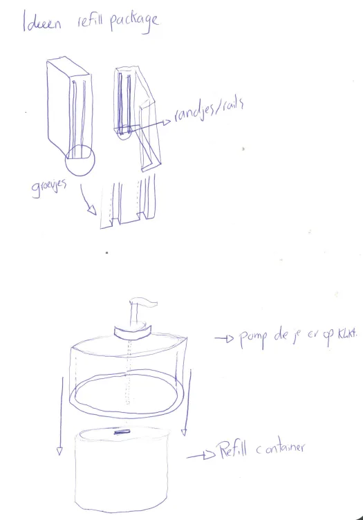
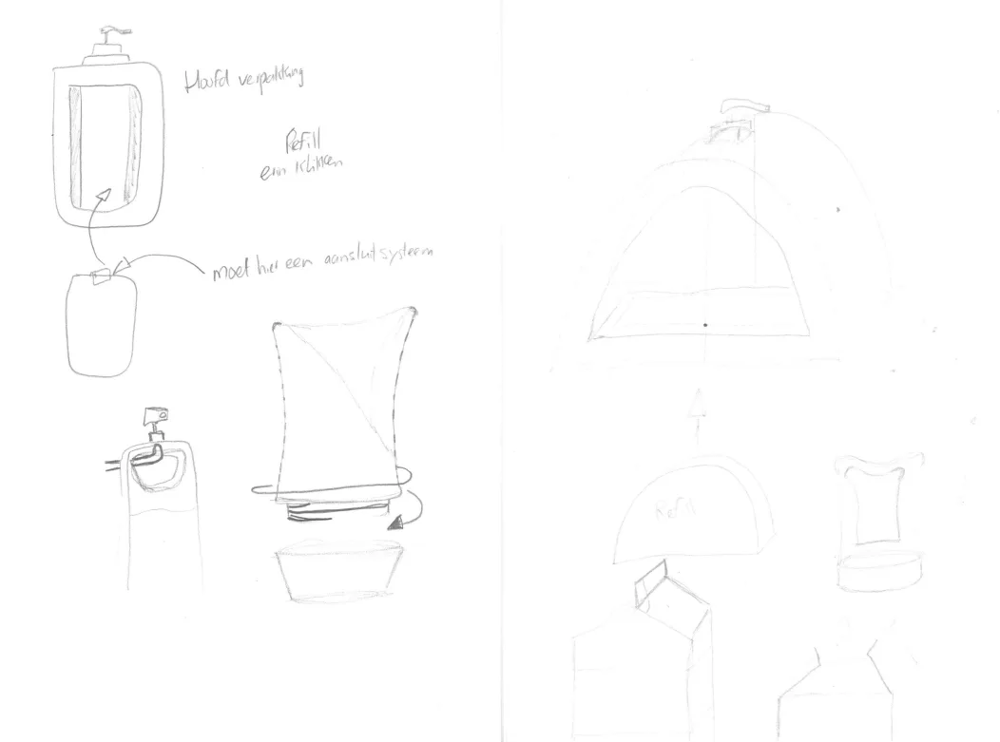
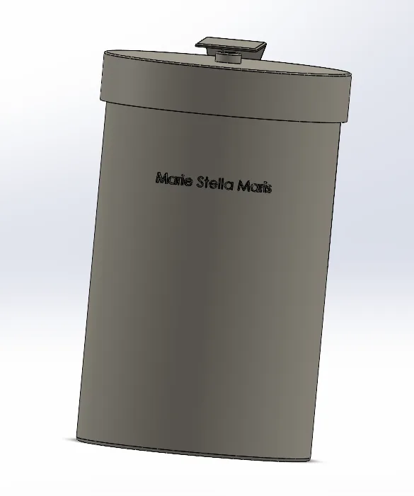
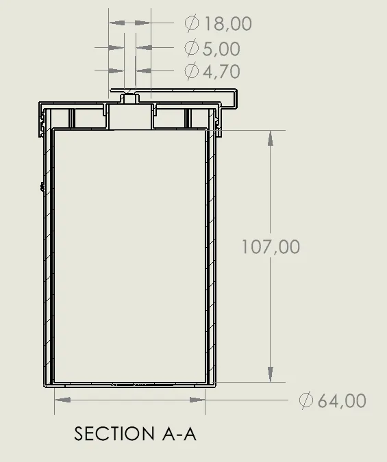
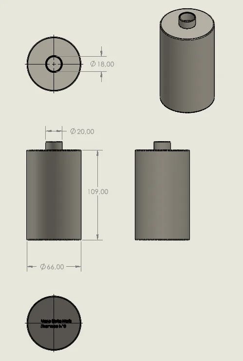
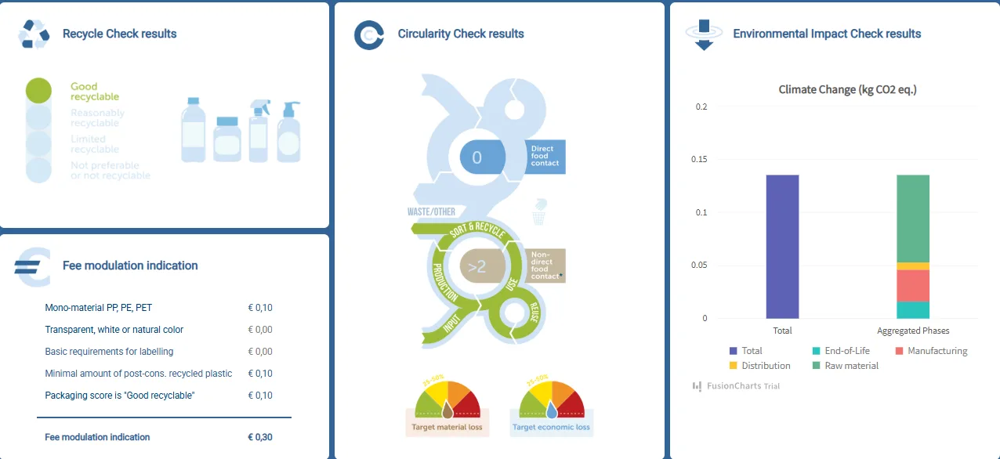

- Project
Recharge Flip Cap
- Course
- Verpakkingsontwerp (packaging design), HvA
- Year
- TODO: year
- My role
- Individual TODO: confirm
- Material
- PP shell, HDPE refill
- Process
- Moulded packaging, SolidWorks CAD TODO: name process per part
- Status
- Completed
A refillable shampoo bottle where the PP outer shell stays and only a light HDPE cartridge is replaced, rated "good recyclable" in the recycle check.
Problem and constraints
Marie Stella Maris sells shampoo in premium bottles. Once empty, the whole bottle is thrown away. The brief asked for a refill system that keeps the premium feel and cuts plastic waste.
The brief set hard material rules:
- Mono-material parts: no labels, glue, metal parts, silicones or elastomers.
- Base and pump reusable several times; only the refill cup is replaced.
- The bottle has to stand stably on a bathroom shelf.
My role
I did the concept sketches, the SolidWorks model, the technical drawings and the sustainability check. TODO: confirm this was individual work and list anything done by others
Method
I explored refill mechanics and connection systems on paper first, then settled on a click-in refill cartridge inside a domed outer shell.
- Two parts, two jobs. The outer shell in PP is the part the user keeps. The refill cartridge in HDPE is the part that travels through the supply chain.
- No mixed materials. Branding sits on the bottom as moulded-in text, so no label or glue is needed.
- Stability. A widened base and low centre of gravity keep the bottle upright.
- Check. I ran the design through a recycle check, a circularity check and an environmental impact check.
TODO: add wall thickness, draft angles and how the cartridge locates in the shell (fit, tolerance)


Results
- Body Ø64 mm, height 107 mm (section A-A).
- Refill cartridge Ø66 mm by 109 mm on the multi-view drawing. TODO: check, the cartridge reads larger than the body
- Recycle check: "good recyclable".
- Fee modulation indication: €0.30 in total, €0.10 each for mono-material PP/PE/PET, a minimum share of post-consumer recycled plastic, and the "good recyclable" score.
- Around 80% less plastic, by keeping the shell and replacing only the cartridge. TODO: add the calculation from the report





What I would change
TODO: write in your own words. Points worth considering:
- Shell and cartridge are two different polymers (PP and HDPE). Each part is mono-material, but the user has to separate them for recycling.
- The cartridge-to-shell fit needs a tolerance study: too tight and the refill is hard to swap, too loose and it rattles.
- Test a printed prototype for stability and the flip cap feel, instead of judging them from the render.
Files
- TODO: add the project report as files/flipcap-report.pdf
- CAD renders and drawings: shown above.